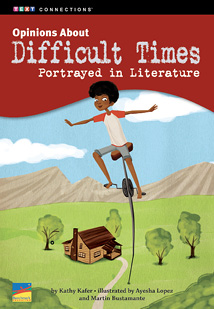
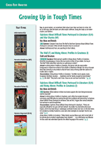
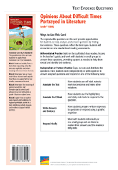

Teacher’s Guide
Related Resources
Text-Dependent Comprehension
Other Titles in This Topic Set
Online Resources
These interactive resources are available through a subscription to benchmarkuniverse.com.
Lexile® 960L
Opinions About Difficult Times Portrayed in Literature
ELA Strategies and Skills
Text-Dependent Comprehension Strategies
Extend Language Knowledge
Vocabulary Strategies
Vocabulary List
*General academic word
**Domain-specific word
Writing
|
What Makes This Text Complex? |
|
|
Purpose and Levels |
Themes are multidimensional and require readers to make inferences about characters and plot events. (pp. 5–9)★ |
|
Structure |
The book is intricate with regard to text types and modes of communication. Sections include informational texts, excerpts from authentic literature, and essays. (pp. 2–9)★ |
|
Language Conventionality and Clarity |
The text includes complex sentence structure, rich descriptive language, and a range of literary techniques. (p. 10)★ |
|
Knowledge |
Some readers may not be familiar with certain historical and geographical settings. |
Qualitative text complexity dimensions from the CCSS are scored on the following scale: 1–Low; 2–Middle Low; 3–Middle High; 4–High.
★Citations refer to pages within this teacher’s guide that address the specific text complexity.
LEXILE® is a trademark of MetaMetrics, Inc., and is registered in the United States and abroad.
Common Core Standards © Copyright 2014. National Governors Association Center for Best Practices and Council of Chief State School Officers. All rights reserved.
© Benchmark Education Company, LLC. All rights reserved. Teachers may photocopy the reproducible pages for classroom use. No other part of the guide may be reproduced or transmitted in whole or in part in any form or by any means, electronic or mechanical, including photocopy, recording, or any information storage or retrieval system, without permission in writing from the publisher.
Opinion/Argument:
Literature
Topic Set: Growing
Up in Tough Times
Scaffolded Preview for
ELs and Struggling Readers
Support students to access the text by orally introducing academic vocabulary, language structures, and concepts.
Pages 2–3. The introduction section provides biographic information about the two authors whose work is featured in the book: Christopher Paul Curtis and Virginia Hamilton. What is interesting about the authors’ lives?
First Read
Read Part 1 (pp. 2–7) RI.6.1, RI.6.2, RI.6.3, W.6.8, W.6.10, SL.6.1a, SL.6.1b, SL.6.1c, SL.6.1d, SL.6.2
Preview and Make Predictions
Invite students to flip through the book and view the photographs, or display the e-book and preview the pages together. Note that the book is made up of several parts.
Say: This book has multiple text types. There are an informational introduction, introductions to two different literature excerpts, the literature excerpts, and three opinions about the literature.
If your students need more support, use the Scaffolded Preview provided.
Set a Purpose
Say: As you read Part 1, use self-stick notes to identify the key events in the excerpt from Bud, Not Buddy.
Choose the reading option that best meets your students’ needs.
Summarize the Main Idea and Key Events: Think and Write Together
Invite students to identify the key events in the excerpt of Bud, Not Buddy. As a group, create a Key Events Chart. Then, as a group, construct a summary of the excerpt. If students need more support to summarize the text, use the lesson on page 3 of this guide.
|
Key Events |
|
Bud goes to the library to look at a book of maps describing the distances between cities. |
|
He plans to travel 120 miles from Flint to Grand Rapids to find his father. |
|
The librarian gives him a Civil War book, and he reads it all day. |
|
He begins his journey to Grand Rapids as soon as the library closed. |
|
When he arrives, Calloway denies being his father. They later learn he is Bud’s grandfather, and Bud has been reunited with his family after all. |
Sample Part 1 Key Events Chart
Lesson: Determine Text Importance to Summarize
Explain that when readers summarize, they include the most important events in a text. Have students turn to pages 4–9. Reread the pages together.
Say: Let’s identify the most important events on page 5, where the excerpt begins. Bud goes to the library to look for the book of maps. This will help him plan his journey.
Reread page 6.
Ask: What cities does Bud look up in the book, and how far apart are they?
Pair students and have them write a summary of pages 4–9.
Summarize the Main Idea and Key Events: Think/Pair/Write/Share
Bring students together and ask several pairs of students to read their summaries aloud. As a whole group, evaluate the summaries and identify any key events that were omitted. Then write a group summary of the key events in the excerpt of Bud, Not Buddy.
|
Bud goes to the library to look at a book that gives information about the distances between different cities. This will help him plan his journey to Grand Rapids where he will search for his father. He will start the 120-mile journey that day. After reading all day, he begins his journey. When he arrives in Grand Rapids, Calloway denies being his father, but the band takes Bud in. He finally realizes Calloway is his grandfather, and he has found his family after all. |
Sample Part 1 Group Summary
Scaffolded Preview for
ELs and Struggling Readers
Support students to access the text by orally introducing academic vocabulary, language structures,
and concepts.
Page 10. The introduction to the excerpt explains what the book M.C. Higgins, the Great, is about. What “hard times” will thirteen-year-old M.C. discuss in the excerpt?
Pages 11–16. The excerpt gives the reader details about M.C.’s family and heritage. What are some of the most interesting details about M.C.’s family and past?
Read Part 2 (pp. 8–16) RI.6.1, RI.6.2, RI.6.3, W.6.8, W.6.10, SL.6.1a, SL.6.1b, SL.6.1c, SL.6.1d, SL.6.2
Set a Purpose
Say: As you read Part 2 (pp. 10–16), use self-stick notes to flag important events described in the excerpt. Think about how these events support the overall theme of growing up in hard times.
Choose the reading option that best meets the needs of your students. If students need more support to access the text, use the Scaffolded Preview provided.
Summarize Key Events: Think/Pair/Write/Share
Invite students to share with a partner what they noted in the text. Have them collaborate to create a new Key Events Chart for the excerpt of M.C. Higgins, the Great.
|
Key Events |
|
M.C. is sitting on his steel pole, examining the valley below and Sarah’s Mountain. |
|
He “sees” visions of his family long ago, how they lived in this region, and died here. |
|
His great-grandmother’s escape from slavery in the area helps him realize how important the mountain and the region are to his family. |
|
Now he realizes that the same area brings different hardships to his family because of the strip miners damaging the landscape. |
|
He sees his brothers and sisters enjoying the area, and he keeps an eye on them as he was meant to, from on top of his steel pole. |
Sample Part 2 Key Events Chart
Then have pairs collaborate to write their own summary of key events in the excerpt. If students need more support in deciding what to include in a summary, refer back to the lesson strategy taught in Part 1.
Bring students together and ask several pairs of students to read their summaries aloud. As a whole group, evaluate the summaries and identify any key information that was omitted.
As a group, construct a written summary of the key events in Part 2.
|
M.C. sits on top of a tall steel pole and overlooks Sarah’s Mountain, a place his family has lived for generations. As he is up there looking at the beautiful scenery, he thinks about the history of the land and how many family members lived and died there. He thinks of his great-grandmother, who escaped slavery with a tiny baby and faced hard times during her lifetime. He worries the strip miners who have set themselves up on the mountain will destroy the future of this mountain for him and his brothers and sisters, whom he watches below. |
Sample Part 2 Group Summary
Read Part 3 (pp. 18–29) RI.6.1, RI.6.2, RI.6.3, RI.6.8, W.6.8, W.6.10, SL.6.1a, SL.6.1b, SL.6.1c, SL.6.1d, SL.6.2
Set a Purpose
Say: Think about both of the excerpts, Bud, Not Buddy, and M.C. Higgins, the Great. How are the main characters in the stories influenced by their environment and circumstances?
Now you will read three writers’ opinions on this topic question. As you read, use self-stick notes to flag the opinions and reasons that are given. In the first opinion, these details are already highlighted for you as an example.
Choose the reading option that best meets the needs of your students. If students need more support to access the text, use the Scaffolded Preview provided.
Summarize Key Story Elements: Think and Write Independently
Ask students to review the details they flagged in each opinion piece. Have them independently create a chart that summarizes the opinion and reasons given in each opinion piece.
|
“Characters Escape to Cope” |
“Characters Become Observers” |
“Characters Defined by Environment” |
|
|
Opinion |
Both main characters rely on their imaginations to escape harsh realities. |
Both main characters are astute observers who examine and reflect on their own world. |
Both main characters are a product of their environments. |
|
Reason 1 |
Bud has a “pretend” family on the food line to make him cope with being alone. |
Observation is so important to M.C. that he has a steel pole devoted to observing. |
M.C. spends time daydreaming because he lives in a time before technology. |
|
Reason 2 |
He escapes into his imagination at the library, not realizing he spent all day reading a book. |
Bud carefully calculates how long it will take him to walk from Flint to Grand Rapids. |
He acts responsibly because he is the eldest and is expected to take care of his siblings. |
|
Reason 3 |
M.C. uses his time on the steel pole to escape his current worries and imagines a world he never lived through—when his great-grandmother escaped slavery. |
Bud observes a Civil War book in such detail that he does not realize that a whole afternoon has passed. |
Growing up during the Great Depression makes Bud’s character resourceful, polite, and hardworking. |
Sample Opinion and Reasons Chart
Have students fill out the Argument Writing Rubric on page 30. Explain that the numbers in the rubric stand for 4—exemplary; 3—accomplished; 2—developing; 1—beginning.
Scaffolded Preview for
ELs and Struggling Readers
Support students to access the text by orally introducing academic vocabulary, language structures, and concepts.
Page 18.What is the title of Opinion 1? What is the author’s view point based on this title?
Page 26.Read the title of Opinion 3. What text evidence might the writer use to support this idea?
Close Reading Options
Support students to dig deeper into the text. Choose one or more of these close reading options, or choose an alternate focus that addresses your students’ needs.
Routine for Finding
Text Evidence
|
Text Evidence |
|
“One second I was opening the first page of the book . . . and the next second the librarian was standing over me . . .” (p. 7) |
|
“I am very impressed, you really devoured that book, didn’t you? But it’s time to close now . . .” (p. 7) |
|
“I couldn’t believe it, it’s happened again! I’d spent the whole day reading.” (p. 7) |
|
|
|
Conclusion |
|
Bud has a thirst for knowledge and enjoys learning. |
Sample Conclusion Graphic Organizer
Close Reading and Analysis
Close Reading Option 1: Draw Conclusions
RI.6.1, RI.6.8, W.6.2b, W.6.2c, SL.6.1a, SL.6.1c, SL.6.1d
Model Finding Text Evidence
Display and read aloud the close reading question.
|
When Bud is in the library, he says, “It seems like time flies when you’re in one.” What does Bud mean by this, and what does it tell you about him? |
Explain that this question asks readers to refer back to the part in the excerpt in which Bud realizes he has spent all day reading in the library.
Say: The quotation the question is referring to is located under the picture of Bud reading intently in the library. The text says, “There’s another thing that’s strange about the library, it seems like time flies when you’re in one.” This indicates Bud likes libraries, but I will have to find text evidence that shows this.
Reread page 7.
Say: The librarian gives Bud a book about the Civil War, and he cracks it open to read about it. Read the details about what it is like for him to open the page, smell the book, and read about each battle. These are details that show how “time flies,” or moves quickly, when he is in a library.
Display a blank Text Evidence Chart and model how you record the text evidence you found.
Support Practice
Ask students to turn to page 7.
Collaborative conversation (turn and talk). Ask students to turn to a partner, reread page 7, and discuss the details that show how Bud becomes so deeply involved in the experience of reading a book that he loses track of time. Remind students to stay on topic, build on each other’s ideas, and ask questions to clarify each other’s thoughts.
Bring students together and ask several pairs to share the text evidence they found and to explain how their evidence supports the conclusion. Explain that when people are doing something they really enjoy, time seems to go by quickly.
Find Text Evidence Independently
Ask students to reread page 7 independently to identify what the text evidence says about Bud’s character. Explain that they will have to use text evidence to support an idea that the author does not state directly. Explain that this is what it means to draw a conclusion or make an inference.
Discuss how this close reading has helped students understand that the text evidence supports the conclusion that Bud enjoys being in the library.
Close Reading Option 2: Draw Conclusions
RI.6.1, RI.6.8, W.6.2c, SL.6.1a, SL.6.1c, SL.6.1d
Model Finding Text Evidence
Display and read aloud the close reading question.
|
Why is Sarah’s Mountain so important to M.C. Higgins? |
Explain that this question is asking what the mountain means to M.C., his family, and his heritage.
Say: This is not something that is stated directly by the author. I must reread the text to find evidence that supports this idea.
Direct students to read page 12.
Say: M.C. daydreams about what his great-grandmother experienced on the mountain, and that is an important part of his family heritage. The mountain means a lot to him because his great-grandmother escaped from slavery there.
Record the evidence on a blank Text Evidence Chart.
Support Practice
Ask students to turn to page 13.
Collaborative conversation (turn and talk). Ask students to turn to a partner, reread page 13, and find more text evidence that shows that Sarah’s Mountain means a lot to M.C. Remind students to stay on topic, build on each other’s ideas, and ask questions to clarify each other’s thoughts.
Bring students together and ask several pairs to share the details they found and to explain how the details support the main idea. Students should be able to explain that the machines and strip mining worried M.C., showing that the mountain means a lot to him and his family.
Find Text Evidence Independently
Ask students to reread pages 14–15. Tell them to find more details to support the idea that Sarah’s Mountain is important to M.C. Students should note that seeing his brothers and sisters enjoying the area shows how important the mountain is.
Discuss how this close reading has helped students answer the question and draw conclusions about the text.
|
Text Evidence |
|
“M.C. shuddered at the thought of all the dead on the mountain, under the junk around his pole.” (p. 12) |
|
“M.C. knew the story by heart. He knew she ran for freedom. She carried a baby.” (p. 12) |
|
“But the idea nagged at him, worrying him, that a hundred years of the past seeped out of the hills to surround him.” (p. 13) |
|
“Laughter was coming from there. His brothers and sister had just reached the lake.” (p. 15) |
|
|
|
Conclusion |
|
The mountain is a place of great beauty, and it is part of his family’s history. |
Sample Conclusion Graphic Organizer
|
Text Evidence |
|
“That meant I’d have to walk for twenty-four hours to reach Grand Rapids.” (p. 6) |
|
“I figured it would be easiest to do the night part first. . . . I wrote down all the names of the cities I’d have to pass through to get there.” (p. 6) |
|
“I’m old now, but I can still get around. Never did leave the mountain. None of the others did, either.” (p. 12) |
|
“Suddenly he was aware of the deep whine of machines in the hills behind Sarah’s to the north.” (p. 13) |
|
|
|
Inference |
|
Bud’s determined actions help the reader understand how important finding his father is, while M.C.’s dreaminess helps the reader understand the importance of saving the mountain. |
Sample Inference Graphic Organizer
Close Reading Option 3: Draw Inferences
RI.6.1, RI.6.8, W.6.2b, W.6.2c, SL.6.1a, SL.6.1c, SL.6.1d
Model Finding Text Evidence
Display and read aloud the close reading question.
|
How are the points of view different in the selections? Explain how this difference affects the reader’s understanding of events in each story. |
Explain that this question is asking them to compare the characters of Bud in the first excerpt and M.C. in the second excerpt to examine their points of view.
Say: I need to compare how each character’s point of view differs and how that helps me understand the events in the story.
Reread page 6 with students.
Say: Bud is so determined to find his dad that he does not see walking for twenty-four hours as something too difficult. Instead of being discouraged, he plans when to start and what cities he will pass through. This helps me understand that finding his father is very important to him.
Model writing your evidence on a blank Text Evidence Chart.
Support Practice
Ask students to turn to page 12.
Collaborative conversation (turn and talk). Ask students to turn to a partner, reread page 12, and find text evidence that shows how the author demonstrates M.C.’s dreamy and relaxed point of view. Point out that he pretends to be old and imagines he has lived on the mountain his whole life.
Bring students together and ask several pairs to share the text evidence they found and to explain how their evidence explains M.C.’s point of view about his love for Sarah’s Mountain. Students should be able to explain that he imagines his future in a way that shows he never left the mountain and died there just like his ancestors did.
Find Text Evidence Independently
Ask students to reread page 13. Tell them to find text evidence that helps them show that M.C.’s dreamy and relaxed point of view demonstrates his attachment to the mountain and his desire to save it. Students should realize that he “wakes” from his daydreams to the sounds of machines working on the mountain and fears that the mountain will one day be destroyed.
Discuss how this close reading has helped students use text evidence to make inferences.
Close Reading Option 4: Analyze an Opinion Text
RI.6.1, RI.6.8, W.6.1c, W.6.2b, W.6.2c, SL.6.1a, SL.6.1c, Sl.6.1d, SL.6.3
Model Finding Text Evidence
Ask students to turn to Opinion 2, “Characters Become Observers” on page 22. Explain that a well-written opinion states the opinion clearly, supports the opinion with reasons, uses transition words to connect ideas, and has a concluding statement that restates the opinion.
Say: The writer’s opinion is clearly stated with this sentence: “In both M.C. Higgins, the Great by Virginia Hamilton and Bud, Not Buddy by Christopher Paul Curtis, the main character is an astute observer who examines and reflects on his world.” In order to analyze this opinion, I will look for specific text evidence the writer uses to support this opinion.
Distribute the graphic organizer BLM on the back cover of this guide.
Say: The writer gives reasons why each character is an astute observer.
Support students to find text evidence to fill in the chart: M.C. has a special 40-foot pole that he sits on when observing the mountain. From this vantage point, he can see everything around him and acts like a spy.
Support Practice
Collaborative conversation (turn and talk). Ask students to turn to a partner, reread pages 6–7, and find the text evidence to show that Bud is a strong character who can think for himself, as well as concentrate and focus on a task. Remind students to stay on topic, build on each other’s ideas, and ask questions to clarify each other’s thoughts.
Bring students together and ask several pairs to share their text evidence. Students should point out that Bud’s calculations about his travels and his deep focus on the Civil War book show he is a strong character. In addition, his observations about the librarian show that he is a keen observer. Tell students that this text evidence supports the writer’s main idea.
Find Text Evidence Independently
Tell students to look for parts of the opinion piece that could be made stronger by providing more text evidence. Ask them to gather text evidence and write quotes from the text, indicating where they would insert it in the opinion piece if they were to revise the writing. Have them focus on text evidence to indicate that both characters are strong
Discuss how this close reading has helped students analyze an opinion text.
Close Reading Option 5: Answering Text Evidence Questions RI.6.1, RI.6.2, RI.6.4a
Use these questions to extend close reading or challenge students who do not need modeling or differentiated practice.
Draw Inferences
Question: What evidence from the text supports the conclusion that both Bud and M.C. are concerned about their families?
Text Evidence: “By this time tomorrow, I’d be looking at the face of the man who had to be my father.” (p. 8) “At once his father and mother, brothers and sisters sprang to life in his mind.” (p. 13)
Determine Key Details
Question: How are the selections different and similar in their subject matter?
Answer: Bud, Not Buddy is about a boy trying to find out about his past and the father he never knew. M.C. Higgins, the Great is about a boy concerned about the future of his family’s home environment. Both are about young boys who are concerned about their families.
Use Context Clues
Question: What does vantage point mean on page 23?
Definition: viewpoint
Text Evidence: “. . . he could see everything in spectacular view.” (p. 22)
Extend Meaning
Cross-Text Analysis Card
Build Language, Vocabulary, and Comprehension
RL.6.9, RI.6.9, RF.6.4c, L.6.2c
Use Commas to Set Off Words
Remind students that commas are used to set off words and phrases from the rest of a sentence.
Write the following sentence on the board:
“From atop his steel pole, M.C. scrutinizes the hills, the river, and the mountains, noting the people and the events in his world.”
Read the sentence aloud and pause at each comma. Then reread the sentence without the commas and ask students to discuss how each reading of the sentence differed from the other. Explain that commas in a sentence show the reader natural places to pause when reading.
Continue this lesson by having students work in pairs to identify other instances in the book in which a comma is used to set off words from the rest of a sentence. Have them write these sentences and read them aloud to each other with or without the commas.
Vocabulary Skill: Using Context Clues
Have students turn to the vocabulary activity on the inside back cover.
Say: Context clues are words and sentences that come before or after unfamiliar words or phrases that help you understand its meaning. These may include cause-and-effect relationships or comparisons.
Have students locate the phrase character sketches on page 2.
Say: The context clues are “One of those sketches became Bud Caldwell—the hero of Bud, Not Buddy” and “…Curtis draws on his own family members and history in his novels.” (p. 2)
Ask students to write character sketches, the context clues, and the meaning of the phrase in their charts. They should then locate other familiar words in their book and complete the chart.
Comprehension Across Texts
If students have read all four texts in the topic set, use the questions on the Cross-Text Analysis Card for additional close readings that require students to find and analyze evidence in more than one text.
Reading, Writing, Speaking and Listening RI.6.1, RI.6.2, RI.6.3, RI.6.4, W.6.1a, W.6.1b, W.6.1c, W.6.1d, W.6.2d, W.6.7, W.6.8, L.6.6
Practice Finding Text Evidence
Have students reread the text to find evidence to answer the questions on the Text Evidence Question Card.
Write to Sources: Narrative Writing
Have students demonstrate their understanding of Opinions About Difficult Times Portrayed in Literature by responding to the text-dependent writing prompt on the inside back cover. Rubrics to help you evaluate students’ writing are available in the online teacher’s guide.
Narrative Writing. Choose one of the chapters and write a new chapter that could come directly after it. Use details from the chapter you read in your new chapter.
Practice Academic Vocabulary
Ask partners to choose three domain-specific words from the glossary and compose oral sentences that demonstrate their understanding of the words. Then have students use these words to write a paragraph that incorporates the three words they chose.
Collaborative Research
Have partners conduct collaborative research about Christopher Paul Curtis or Virginia Hamilton. These two writers captured what it was like to live through difficult times. Have students use print and digital resources to learn about the life of one of these writers and what inspired their writing. As they do their research, have them take notes, then write, and publish their reports. As an additional challenge, have students present their reports to the class.
Independent Learning
Text Evidence Question Card
Interactive Activities
Visit benchmarkuniverse.com for additional interactive learning activities.
Analyze an Opinion Text
Directions: Read Argument 2, “Characters Become Observers.” Write the author’s argument, reasons, and supporting text evidence in the chart.
|
Opinion: |
|
|
Reason |
Text Evidence |